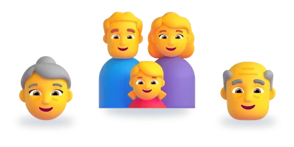
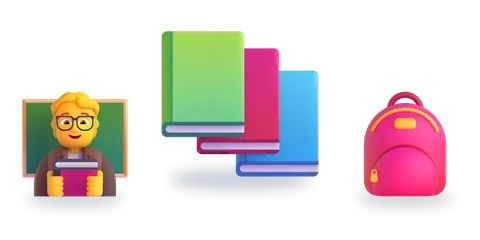
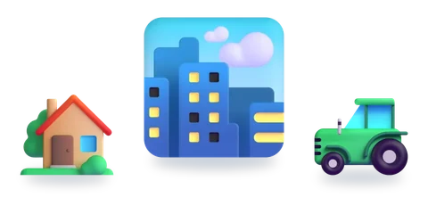
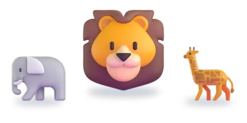
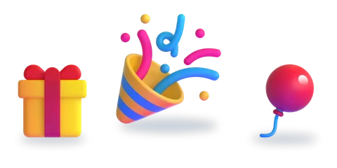

المستوى الثاني
ست وحدات، لكلّ وحدة خمسة أسابيع
اختر الوحدة، ثمّ الدرس.

الوحدة 1العائلةدرسان
الوحدة 2الحياة المدرسية3 دروس الوحدة 3التغذية والصحة3 دروس
الوحدة 3التغذية والصحة3 دروس
الوحدة 4القرية والمدينة3 دروس
الوحدة 5عالم الحيوان3 دروس
الوحدة 6الحفلات والأعياد3 دروس
الرسوم: Twemoji (CC-BY 4.0) وFluent Emoji من Microsoft (MIT). الأصوات: صوت عربي اصطناعي.